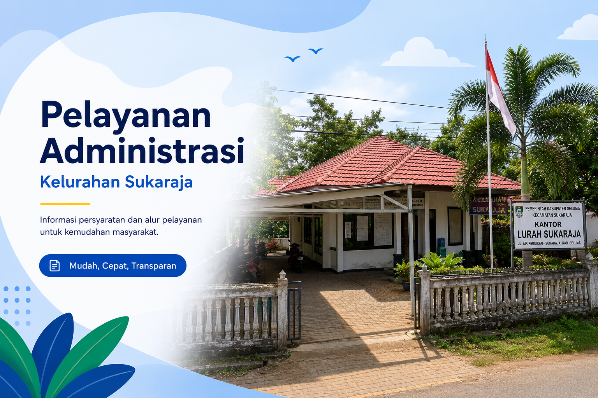

Temukan seluruh informasi layanan administrasi, persyaratan dokumen, serta alur pelayanan Kelurahan Sukaraja secara cepat, mudah, dan transparan.

Jenis Layanan
Proses Pelayanan
Administrasi
Prioritas Pelayanan
Pilih salah satu layanan di bawah ini untuk melihat persyaratan lengkap.
Ikuti tahapan pelayanan berikut agar proses administrasi berjalan lancar.
Dalam setiap kepengurusan administrasi kependudukan, pemohon diwajibkan melampirkan seluruh persyaratan yang diminta seperti Surat Pengantar RT/RW dan bukti pelunasan PBB agar proses pelayanan berjalan dengan lancar.
Senin - Jumat
08.00 - 16.00 WIB
Hubungi kantor kelurahan pada jam kerja.
Temukan seluruh informasi layanan administrasi, persyaratan dokumen, serta alur pelayanan Kelurahan Sukaraja secara cepat, mudah, dan transparan.
Jenis Layanan
Proses Pelayanan
Administrasi
Prioritas Pelayanan
Pilih salah satu layanan di bawah ini untuk melihat persyaratan lengkap.
Ikuti tahapan pelayanan berikut agar proses administrasi berjalan lancar.
Dalam setiap kepengurusan administrasi kependudukan, pemohon diwajibkan melampirkan seluruh persyaratan yang diminta seperti Surat Pengantar RT/RW dan bukti pelunasan PBB agar proses pelayanan berjalan dengan lancar.
Kelurahan Sukaraja
Kecamatan Sukaraja
Kabupaten Seluma
Senin - Jumat
08.00 - 16.00 WIB
Hubungi kantor kelurahan pada jam kerja.